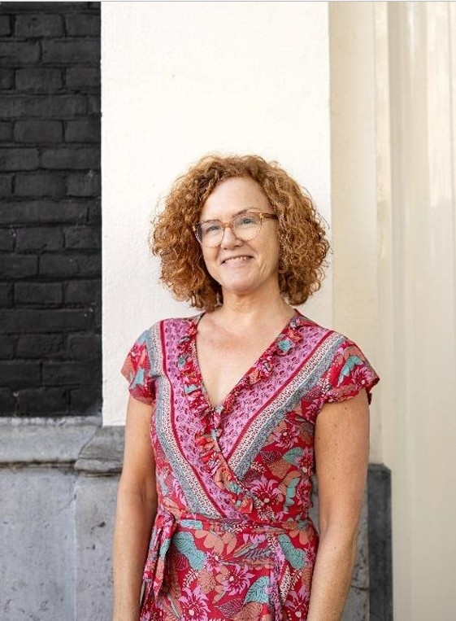

Boek
Gelukkig opgroeien
Een boek voor ouders die hun kinderen willen laten floreren — door zelf te doen waar ze blij van worden.
Ik begeleid drukbezette volwassenen die zichzelf voorbij lopen in de dagelijkse hectiek te (her)ontdekken wat ze diep van binnen écht willen, zodat ze vanuit innerlijke rust en vrijheid keuzes maken die hun leven weer plezierig en vervullend maken.


"Oprecht in het leven staan begint met weten wie je bent — en durf je daarnaar te leven."
— Marieke Verhaak
Veel van mijn cliënten zijn in de drukte van alledag het contact met zichzelf kwijtgeraakt. Ze houden alles draaiende, maar voelen diep vanbinnen dat er iets uit balans is.
Ik begeleid volwassenen die dit herkennen terug naar rust, helderheid en innerlijke vrijheid. Zodat ze weer kunnen luisteren naar hun intuïtie, die zachte maar feilloze stem die precies weet wat klopt.
Mijn begeleiding is zacht, intuïtief en afgestemd op wat jij op dat moment nodig hebt. Ik help je vertragen, naar binnen keren en weer leven vanuit wie je werkelijk bent, zodat je niet langer wordt geleefd, maar jouw leven bewust vormgeeft. Zodat je balans, plezier en voldoening ervaart.
Lees hier meer over mijn eigen proces van vertragen en contact maken met mijn binnenwereld.
In mijn boek Gelukkig opgroeien deel ik dezelfde visie die mijn werk draagt: leven vanuit rust, intuïtie en trouw zijn aan jezelf — en dat doorgeven aan je kinderen.
Of je nu wilt beginnen met mijn boek, een persoonlijke sessie zoekt, of liever in een groep start.
Een boek voor ouders die hun kinderen willen laten floreren — door zelf te doen waar ze blij van worden.
Een-op-een hypnotherapiesessie. We werken samen aan patronen die je tegenhouden — zodat je ontspannen en authentiek in het leven kunt staan.
Samen mediteren met de helende kracht van soundhealing. Ontspan diep, kom bij jezelf en laad op in een zachte groepsbegeleiding.
Een volledige dag van diepe ontspanning, zelfinzicht en verbinding met wat jij écht belangrijk vindt.

door Marieke Verhaak
Als ouder wil je het liefst dat je kind lekker in zijn of haar vel zit en volop geniet van het leven terwijl het opgroeit. In mijn boek inspireer ik ouders om ontspannen en vol vertrouwen in het leven te staan.
"Echt present zijn naar jezelf en naar de ander: dat is wat Marieke ons leert. Een succesformule voor meer verbinding."
Marja van Vliet, PhD
Onderzoeker Positieve Gezondheid
"Een aanrader voor ieder die wil groeien in voluit genieten door de expert te worden van jezelf."
Vera de Pundert
Pedagoog
"Duidelijk, herkenbaar en soms confronterend. Ik haal er veel inspiratie uit voor mezelf en mijn werk."
Rina Duijnker
Auteur & Kindercoach
Ben je klaar om te vertragen, naar binnen te keren en weer te leven vanuit wie je werkelijk bent, zodat je jouw leven bewust kunt vormgeven?
Tijdens een persoonlijke sessie stem ik me volledig af op datgene wat er in jou speelt en wat jij nodig hebt. We spreken jouw zelfhelende vermogen aan om weer te leren voelen en plezier en voldoening te ervaren in je dagelijks leven. Lees hier meer over hoe een 1 op 1 sessie eruit ziet.
"Voorafgaand aan een 1-op-1 sessie mag je altijd even bellen om te onderzoeken of de therapie bij je past."
Tel: 06-20525160
€ 90 per 50 minuten · online
Boek direct een sessie"Ik voelde me direct op mijn gemak. Tijdens de therapie heb ik ferme stappen vooruit gezet door vol zelfvertrouwen mijn grenzen aan te geven. En het fijne is: mijn kinderen doen me nu na."
— Feline
"Al tijdens het eerste gesprek voelde ik me veilig en begrepen. Haar eerlijkheid en oordeelloosheid gaven de doorslag om mijn gevoelens te durven onderzoeken."
— Rob

Tijdens mijn begeleide groepsmeditaties maken we een diepe reis naar binnen. Daar ervaar je innerlijke rust, harmonie en krijg je vaak inzichten of ingevingen.
€ 22 per 1,5 uur · online
Uit onderzoek blijkt dat geluidstherapie stress vermindert, cognitieve functies verbetert en zorgt voor een rustigere gemoedstoestand en hogere creativiteit.
"Jouw stem is heel fijn en rustgevend waardoor ik snel en diep kon ontspannen." — Iris
"Ik voelde rust en harmonie. Het was een diep ontspannende ervaring." — Mark
Een heerlijke dag vol diepe ontspanning en innerlijke rust helemaal voor JOU.
€ 122 Comfortabel vanuit huis en helemaal afgestemd op jou
Ik wil naar dit retreatOnderzoek door topneuroloog Steven Laureys toont aan dat meditatie een positieve invloed heeft op:
"Ik voelde me na deze dag opgelucht en ervaarde ruimte in mezelf." — Nadja
Plan vooruit: bekijk wanneer groepsmeditaties, retreats en persoonlijke sessies beschikbaar zijn. Klik op een gekleurde dag voor meer info.
Heb je een vraag over een persoonlijke sessie, het boek of wil je meer weten over de retreats? Ik reageer binnen 2 werkdagen.